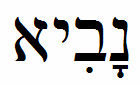
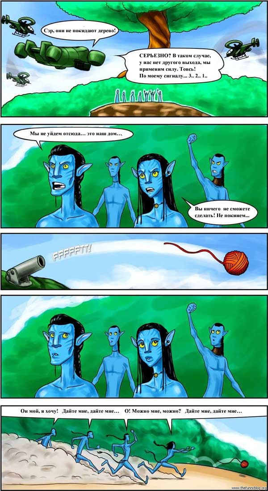

На'ви — тоже люди! Причем — именно мы!
Помимо главной суггестии «предавать можно», в фильме есть побочная, калибром поменьше. Цитаты из инета:
«…вечером в четвертый раз ходили на "АВАТАР". Снова переживали, рыдали и радовались, когда наши погнали оккупантов».
«В данном случае белые это нави, а корпорация — негры. Потому как надо бы различать не "наши и не наши", не "цивилизованные и дикари", а агрессоры и их жертвы. Это единственный правильный подход».
«В фильме Кемерона еще много говорится об алчности капиталистического общества, готового ради снижения издержек уничтожать целые народы. Ну и учитывая ситуацию у нас в стране, я, наверное, подсознательно асоциирую себя с нави, а не с американскими исследователями и ЧОПовцами, хотя вы правы в том, что будь в фильме не антропоморфные симпатичные нави, а какие-нибудь разумные пауки или слизни, мне было бы труднее им сопереживать».
Характерные такие фразы, в интернете подобных можно найти много, поэтому и «©» не ставлю. Смысловое содержание сводится к «это нас надо понимать под на’ви!». Мол, ресурсов у России много, и это американы нападут на нас как на на’ви, и голубые кошаки — это на самом деле мы.
Мем «нельзя забирать природные богатства у аборигенов, если даже они ими не пользуются» работает как раз против русских — мол, у них много, надо отнять и поделить! А еще они «угнетали» разных аборигенов, и теперь должны платить и каяться ©
Нет уж — русские никогда себя с голубыми не ассоциировали. Наш флаг — цвета крови.
Радетели няшных котегов попросту не способны думать далее, чем на шаг вперед или смысловой слой вглубь даже в рассуждениях, что уж говорить о знании психологии.
Еще раз повторю: бессознательное не оперирует сложными грамматическими конструкциями. Оно даже словами не оперирует, а лишь образами, символами и т.д.
Именно по этой причине крайне не рекомендуется кричать кому-то «не упади!» — «не» бессознательное не воспринимает, а образ падения ему прекрасно известен, он и возникнет, увеличивая вероятность падения.
Говорите, смысл фильма «надо идти против своих, если они пытаются отобрать ресурсы у аборигенов, которые им [пока еще] ничего не сделали»?
Вот и тут суггестия будет воздействовать как «можно/надо идти против своих». И тут не важно, в каком случае — главное, что МОЖНО. А уж там сам индивид найдет себя подходящую отмазку.
Таким образом, принципиально не верны мнения вида (опять от анонима):
«Я полностью поддерживаю точку зрения о том, что в лице Куоритча, Селфриджа и компании Кэмерон вывел Америку. А в лице на`ви — разные “недоразвитые” нроды, вроде иракцев, венесуэльцев и нас, грешных. Вы, doppel_herz, пишете, что придерживаетесь “двойной морали: что хорошо для нас — то хорошо, что хорошо для наших врагов — то плохо”. Вот и порадовались бы, что во вражеском стане нашелся один сознательный человек, который помог приостановить экспансию американского империализма. Определитесь, с кем вы?»
Думать надо глубже, чем на один ход вперед. Суть-то не в одном человеке, а в явлении целиком. И тут куда лучше, чтобы не было предателей среди своих, чем предательство допускалось бы и среди своих, пусть даже чужим «тоже можно».
Даже если не учитывать этический аспект (и тему развития личности у «своих»), то посмотрели бы хотя бы рассудочно: куда больше будет предателей «за корзину печенья и бочку варенья», чем идейных «помочь хорошим людям».
***
«megakhuimyak: — Иожно ведь посмотреть и с другой точки зрения — для банды азербайджанцев вы такой же чужой/дикарь, который владеет ценным ресурсом (квартирой), который им нужнее.
doppel_herz: — Совершено верно. Но, как Вы считаете, в каких условиях у меня больше шансов отстоять свое жизненное пространство — объединившись с такими же расистами-ксенофобами Куориджами, или прочитав им лекцию о гуманизме?
Megakhuimyak: — Извините, но Куориджи — это они, а вы. На’ви и ваш единственный шанс — это что среди них окажется гуманист. Практически весь бывший СССР — это сырьевой придаток или ЕС или Китая, поэтому мне ваша позиция не очень понятна.
doppel_herz: — После того, как мою страну сделали сырьевым придатком, уничтожив ее промышленность, науку и образование, я еще должен надеяться, что в оппонентах проснется совесть и гуманизм? :-) Мы же взрослые люди и понимаем, что все эти сопливые сказочки — для впечатлительных девочек. Люди, принимающие решения, строят свою жизнь совсем не по фильмам. Если я оказался слабее врага, это совсем не значит, что победу мне принесло бы непротивление злу или гуманистическое философствование. Вы сами указали, что любой гуманист в стане врага — потенциальный предатель, так зачем же нам тут гуманисты? Пусть они все будут у наших противников».
***
Еще мнение, на этот раз — хотя бы с раздумьями по поводу, ross_grifon:
«Представьте, что наш народ попросят “подвинуться” с территорий с хорошим климатом, с ресурсами, потому что кому-то “очень нужно”, а кто-то из тех кому “больше нужно” решит помогать вам, не желающим отодвигаться со своей земли. Тут вопрос — есть ли они на самом деле некие “общечеловеческие ценности” (хоть термин и засран до нельзя), которые выше, так сказать, ценностей локальных? Например — хорошо ли и можно ли решать свои проблемы путем уничтожения или ввержения в нищету других? Англичане, например, ради продвижения своих товаров в Индии уничтожали там целые отрасли, то есть ввергали местных ремесленников в голод, нищету и смерть миллионами — хорошо ли это? Правы ли они были, ведь таким образом они поднимали уровень жизни своего народа (хотя в 19 веке там простые люди жили херово), или как минимум закладывали фундамент для будущей сытной жизни для своих работяг. …
Мне лично ближе лозунг “нам земли чужой не надо, но и своей ни пяди не отдадим”. Наверно, потому, что у нас в России с пространством никогда особых проблем не было и ресурсов хватало».
Отвечает Doppel Herz:
«И наш народ обязательно попросят подвинуться, как и мы подвигали когда-то иные народы. Собственно, это уже происходит. Но это и называется историей человечества, в которой действует единственный общееловеческий закон — “кто сильнее, тот и прав”. Я не верю в мирное сосуществование народов и культур — успешны всегда либо ассимиляция, либо уничтожение. Все остальное — откладывание проблемы на плечи потомков. Посмотрите, как кричат о независимости те самые слаборазвитые народы, которые пощадил русский штык — вот это результат национальной политики. Но вообще-то речь о таком понятии, как предательство и отношении к нему в обществе. Любить Родину нынче стало немодно и безбонусно, и люди, считающие, что своя рубашка ближе к телу, уже перебежали на сторону эффективных собственников, разрабатывающих наши ресурсы. А чтобы их ряды множились, снимаются пропагандистские фильмы. Как Вы полагаете, лента Камерона учит тому, как защищать свою Родину, или как полюбить чужую?
Вы просто зафиксировали понятие “своей земли” на самом благоприятном для России уровне. Это правильно, но ведь так было не всегда — Ермак шел в Сибирь не школы с больницами строить, Кавказ и Среднюю Азию нагибали по полной программе штыком, а не проповедями. Разумеется, по официальной версии, все это делалось для их же блага (но при этом действительно давали культуру, образование и т.д.! — W.). Упомянутый Вами слоган — фрагмент из “марша трактористов”, написанного в 1938 году. Через год началась советско-финская война, где мы выступали отнюдь не обороняющейся стороной.
Что же касается нелюбви к США — я, например, не играю в компьютерные игры, где американский спецназ действует в России. По большому счету — чепуха, набор байтиков, нарисованные на экране пиксели. Но, как знать, может быть именно с шуточной и виртуальной стрельбы по своим все и начинается?»
Именно так.
Свежий пример: компьютерная игра Modern Warfire 2, в которой присутствует уровень, где надо расстреливать в аэропорту мирное русское население. Чисто по приколу, ага... У нас-то его вырезали, но писалась игрушка и не для русских — а для тех, кого хотят приучить к тому, как прикольно стрелять по русским (сюда же — весьма специфическое изображение русских в западном кинематографе).
А многие с удовольствием скачивают полную версию…
***
Анонимно: «А знаете, я тут почитал ответы г-на Херца, и понял: его не интересует назначение минерала, наличие мандата на освоение планеты, моральные обоснования развязанной землянами войнушки, и многие другие мелочи. Фактически, упомянутый г-н считает нави — "чужими", а землян — "своими", причем бесприкословно, независимо от действий тех или других. За "чужими" не признается никаких прав, и никакой закон, в том числе и моральные нормы, к ним не применим. А "свои" имеют право делать все: захватывать планеты, уничтожать другие расы, ломать экосистемы, даже если поводом для этого является всего лишь сырье для лекарства, улучшающего потенцию.
Вот такая себе позиция. Никакими аргументами ее не изменишь. Дело в том, что граница свой-чужой расширяется или сужается в соответствие с уровнем духовного развития индивида. Автор рецензии просто еще не дорос до мнения, что всякое разумное существо изначально заслуживает звания "свой", и только отрицательные действия такого существа могут являться основанием для перевода его в разряд "чужих". Но это ничего, скорее всего автор дорастет, правда, может быть не в этой жизни».
Здесь показательна попытка занять психологически позицию «сверху» — мол, «дорастите до моего уровня, у меня-то позиция априори правильнее». Такой подход характерен именно для случаев, когда аргументов нет и не предвидится, но шаблоны мышления испытывают перегрузку. Вот и получается «да как же так можно, надо так, как привычно мне!» — именно что идет невосприятие аргументов.
Обратите внимание: Doppel Herz подробно раскрыл свою позицию, причем там действительно не важно наличие «мандата на освоение планеты» и прочего. Вместо контраргументации — всего лишь «да как так можно! это не морально!».
Еще интересен тезис «всякое разумное существо изначально заслуживает звания "свой"». Буквально всякое, ага. Прямо-таки представляю, как автор тезиса идет где-либо по Гарлему среди негров, считая их за «своих». Как думаете, долго ли придется ждать, когда возникнут «отрицательные действия», которые «могут являться основанием» для перевода в «чужие»? И поможет ли это имярек?
***
Еще, от того же анонима: «Вся демагогия в рассуждениях Доппель-Херц и Кладуна основывается на одном ложном утверждении, которое, если вытащить его на поверхность и очистить от прочей мишуры, передергивания фактов и подмены понятий оказывается хрупким и ущербным и все логические построения, сделанные на его основе, рушатся как домик из кубиков. Это утверждение о том, что Нави — не люди, не разумные существа, подобные нам, а какие-то твари, выродки и, стало быть, уничтожать их и среду их обитания не только не зазорно, а даже благородно. А это мы уже проходили. Фашизм, расизм, антисемитизм, да господи... даже гомофобия.))) И поскольку наши демагоги прекрасно понимают спорность и эфемерность этого утверждения, им только и остается кричать об этом погромче, с применением наибольшего количества оскорбительных слов, стараясь сбить остальных с толку. Правильная мысль была высказана в фильме: если тебе что-то нужно, что принадлежит другому, удобнее всего выставить его врагом и нелюдем, а еще лучше спровоцировать противника».
Оцените переход от «не люди» к «не разумные, подобные нам» — и, мол, поэтому-то всякие аморальные индивиды не жалеют синих няшек. «Логика» тут точно такая же, как у русофобов, которые одновременно доказывают, что нация по крови определяться не должна, и что «поскреби русского — найдешь татарина» или хотя бы финно-угра.
Очевидно, что для таких вот заявителей вопрос «крови» крайне важен — и они готовы на любой подлог, лишь бы русские этого родства не чувствовали. Мол, либо «россиянская нация для всех», либо «нет никаких русских, помеси одни»). Вот и в этом случае ровно то же самое: косвенно выдвигается тезис «всяких тварей можно убивать». Мол, людей нельзя, а «тварей» — можно, на’ви — няшны, кавайны и воздыхательны, их убивать нельзя, значит — люди. Практически — «если из высказывания P следует Q, и Q приятно, то P истинно» © А.Н. Колмогоров о т.н. «женской логике». Т.е. раз на’ви убивать не хочется, значит, надо считать за людей! Очень напоминает по «логике» старый советский анекдот:
«Покупатель в
магазине обращается к продавщице.
— Рыбонька, взвесь мне кило конфет.
— Рыба — значит, щука. Щука — значит, с зубами. С зубами — значит, собака.
Собака — значит, сука. Граждане, он меня блядью обозвал!!!».
Ровно такое же игнорирование фактов и навязывание ассоциаций персонального глюкалова.
Все просто:
а) убивать можно и людей — надо только не забывать о целесобразности;
б) не-людей тоже убивать можно, а иногда и нужно.
Так что вопрос «считать ли на’ви за людей, только голубых и кавайных» попросту не имеет отношения к делу в плане обсуждения предательства. Максимум, где это имеет смысл — так это в обсуждении, имеется ли в фильме еще и зоофилия.
Doppel Herz, ответ анониму:
«Дело в том, что Ваше построение вообще не содержит логической основы, исходя из ложной теории о том, что человеческая жизнь имеет какую-то самостоятельную ценность. Меж тем, это совершенно не так — понятие ценности существует лишь внутри социума, то, что выходит за его рамки и не приносит пользы обществу, ничего не стоит. Так жизнь раба, носящего воду в бассейн патриция, имеет определенную цену. А вот жизнь дикаря, не вовлеченного в систему цивилизации, ни стоит ни копейки. Странно, что такие элементарные вещи приходится проговаривать.
Судя по всему, множество людей привыкло повторять фразу "это мы уже проходили" на манер студента, сдавшего экзамен и благополучно забывшего все, что говорилось в конспектах. Давайте мыслить самостоятельно, а не ссылаться на таинственные общечеловеческие истины. Позабавил полный набор либеральных штампов о фашизме и гомофобии, как будто это что-то плохое. Вы в состоянии доказать справедливость утверждения, что антисемитизм — абсолютное зло? Если нет, зачем же пользоваться этим кубиком из пропагандистского набора? Пытаетесь выставить оппонента врагом и нелюдем?».
Думаю, для некоторых тут надо привести пояснение. Doppel Herz отнюдь не заявляет, что дикарей можно убивать, раз их жизнь ничего не стоит. Дело в другом: само понятие «цены жизни» имеет смысл лишь в системе координат, базирующейся на понятии стоимости, т.е. на деньгах. Вот когда деньги — самое главное в жизни, то можно говорить о «стоимости жизни». А если не мыслить монетаристскими категориями, то жизнь не имеет цены.
И опять приходится пояснять, так как общепринятые шаблоны мышления крайне глючны, намеренно извращены и навязаны как «общечеловеческие». То, что жизнь не имеет стоимости, не значит, что она бесценная в смысле «ценнее всего, что угодно». Это уже всеразличный гуманизм — мол, жизнь любого человека превыше всего и прочие слезоньки детонек. Программистам тут объяснить проще: не «zero» в ячейке, а «null». Не определено.
Нельзя измерять жизнь человека деньгами, и все тут. Это и глючно, и приводит к мышлению в парадигме «все имеет свою цену». Жизнь — это не «высшая ценность» (видите — и даже так «ценность» вылазит!), она вне этой категории. Можно предпочесть что-то жизни — скажем, честь. Но не стоит заявлять, что одно дороже другого. Важнее — скажем так. Если имярек имеет достоинство, честь, является личностью — он не продается. Ни за деньги, ни за идеи. Изменить свое мировоззрение, сохранив личность, можно лишь постепенно, осознав и проработав изменения, поняв, почему раньше думал иначе, чем новая точка зрения более верна и т.д.
Резкое же изменение точки зрения по «базовому» вопросу — это именно предательство как минимум себя лично (выше я это раскрывал в соотв. главе).
Из старого:
«Наличие внутренних принципов позволяет сохранить цельность личности. Какие-то модели поведения становятся неприемлемыми? Только весьма некомпетентный в личностной психологии субъект расценит это как снижение тактических возможностей. Может ли обычный хомо дышать хлором? Нет — т.к. это убьет его. Это что — сужение его "свободы выбора"? Может ли личность "на минуточку" отказаться от собственных базовых принципов? Нет — т.к. это будет концом личности. И никакие причины и поводы для подобного отказа не имеют смысла, т.к. данный способ разрешения ситуации приводит к смерти (личности в данном случае), и результатами этого разрешения воспользуется кто-то другой: патологоанатом — в случаем с дыханием хлором, и какое-то мурло, оставшееся на месте личности в том же физическом теле — после ломки личностного стержня.
Часто ли у читающего появляется желание "минуточку подышать цианидами" или искупаться в плавиковой кислоте? Что — даже вопросов таких не возникает? Вот и у субъекта со сформированными внутренними принципами — именно что даже не возникает мысли о том, чтобы временно отбросить их, будь это ситуация с танком и гранатой или банальная коммерческая сделка. Базовые принципы личности — не "костюмчик на выход", они не тасуются в зависимости от ситуации. Они могут изменяться/развиваться, а некоторые из них и отбрасываться — но только в результате осознанной, обоснованной и последовательной работы по развитию личности. И побудительная причина такой работы никогда не исходит "извне" — это всегда результат стремления личности к развитию».
***
Можно встретить и такие вот шедевры, гм, мышления:
«Джейк провел расследование и доложил нанимателю: "они не уйдут". И в таких обстоятельствах решение Компании вышибить аборигенов с дерева насильно – типичный разбой. Повторяю: раз-бой. Пиф-паф, и вы покойники. В чистом виде статья УК РФ 162-4: организованная группа, завладение имуществом в особо крупном, причинение тяжкого вреда, короче, от восьми до пятнадцати лет каждому. То, что юридический статус На’ви сомнителен, роли не играет: разбойничать все равно нельзя. Тем более, терпилы — очевидные гуманодиды: две руки, две ноги, хвост с кисточкой, вполне себе русский человек…» © divov
Надо же, русские! Офигеть — мол, если некто терпила (хорошенькая такая ассоциация, русофобская) с двумя руками и ногами, то это русский, и никакой цвет кожи или там хвост с кисточкой этому не мешают. Наглядная иллюстрация, почему нельзя определять «по культуре».
И нечего заявлять, что-то типа «родство по духу куда сильнее родства по крови», как неоднократно писалось в разных вариантах. Какое там родство по духу за такое время? Джейк — турист, попросту говоря, и понравиться ему могло лишь что-то внешнее, а не суть на'ви. Тем более, что штеккером он к супердереву подключился далеко не сразу.
Впрочем, не буду спорить, что Камерон вполне мог иметь в виду и русских. Kontradmiral верно отметил, что «в сценарии прослеживается особое внимание Камерона к мелочам, становится понятен скрытый символизм многих сцен. Например, сцену, когда красный Турук Джейка в финальной битве заходит на коронную атаку “Дракона” полковника, Камерон в сценарии описывает следующим образом:
"JAKE’S LEONOPTERYX drops toward the Dragon like a Mig 29. " ©
Любопытно, не правда ли? Кем же тогда видит Камерон
управляющего красным Туруко-мигом Джейка?».
Вот только ассоциация
«русский — предатель» мне не нравится, знаете ли.
***
Напоследок — смешное: «В фильме "Аватар" народ На'ви, это голубые кошки. Голубые кошки существуют в реальности, и их полное название — "Русские Голубые кошки". Вдобавок, имя народа Hа'ви является палиндромом имени Иван, причем и по-русски и по-английски, navi = ivan».
Есди уж заниматься лингвистической конспирологией, то «навИ» (ударение на последний слог) — это «пророк» на иврите (благодарю за консультацию Р. Хазарзара). К примеру, Илья-пророк — это Элиягу hа-нави».
***
fadarkov: «Предлагаю посмотреть на проблему под другим углом.
Почему, собственно, На'ви — не люди? Благодаря технологии аватар они могут иметь с людьми общее потомство, что вполне сопоставимо с повсеместно распространенным сегодня искусственным оплодотворением. Их психология тоже не сильно отличается от человеческой — разница сопоставима с разницей между земными культурами Запада и Востока. Нельзя даже сказать, что они — дикари. Да, их технологии примитивны, но их духовное развитие несоизмеримо выше такового у землян.
Получаем вывод, немного даже смешной в своей очевидности — Кэмерон провел перекличку не между предателями, а между РАСИСТАМИ. Самыми банальными, классическими расистами, которые двести лет назад не могли в своей ограниченности допустить, что существо с черной кожей, рожденное в Африке, может быть разумным человеком, а теперь точно так же не могут помыслить, что человеком может быть кто-то с синей кожей и хвостом».
Мда. Вот он — уровень интеллекта тех, кто осуждает расизм, как будто бы это что-то плохое. Особенно показательно заявление о духовном развитии, несоизмеримо высшем. Это, интересно, откуда следует? Я в фильме ничего такого не заметил. Дикари как дикари, только синие и трехметровые.

И обратите внимание, в люди уже записывают синих и хвостатых… Не просто «другие разумные», но люди! Нехилый выверт сознания, однако.
***
Efficient Sociopath верно пишет:
«Опять этот классический штамп — добрые, кавайные, благородные дикари (обязательно живущие в гармонии с природой, без этого никак) отбиваются от нашествия злых, жадных, слабых и глупых цивилизованных людей, желающих понаделать зубочисток из Священного Дуба. Дикари не болеют, не страдают от произвола вождя (а вот цивилизованными людьми обязательно управляет маньяк-самодур), не дохнут в междоусобицах (разве что со злыми дикарями, перешедшими на сторону Цивилизации, тоже жадными и глупыми), и вообще живут в полной идиллии, поют и танцуют.
Не знаю, откуда появился этот мозговой вирус, но нынешняя толерантность с целованием в жопы ниггеров и арабов выросла явно из него (а также из симпатии ко всем слабым, сирым и убогим, насаждаемой некогда христианством). Я думаю, что очень неплохо было бы внести некотрую толику последовательности в убеждения дикарепоклонников, а именно отправить каждого любителя "гармонии с природой" на несколько лет в горные поселения борцов за независимость Ичкерии, деревни сомалийцев, которых жадность корпораций вынудила стать на путь пиратства, или еще каких-нибудь не менее гордых их собратьев по степени отрыва от Цивилизации. Не помню, откуда эта фраза: "Если в путеводителе какой-либо народ назван гордым, то это скорее звери, чем люди".
Самое хреновое, что эта мерзость везде, где затрагивается тема отношений дикарства и цивилизации. За единственным исключением — сериал Rome, на который я люто-бешено инвольтирую уже почти год:
“— So tell me, if it were you who had to retrieve Caesar's eagle, how would you go about it?
— I'd take captives from every tribe in Gaul and crucify them one by one until someone tells me where the eagle is. Then, I would go in quick and quiet with one or two men and steal it back.
— Good.”»